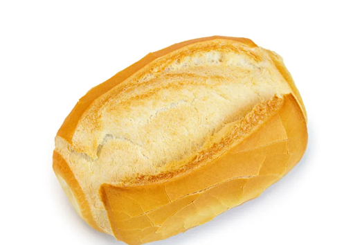

pão
O Pão na Cultura Humana: Um Alimento que Une Gerações e Culturas
O pão, esse alimento simples e ubíquo, desempenha um papel central nas mesas e nas culturas de todo o mundo. Sua história remonta a milênios, desde os primeiros experimentos de panificação em comunidades antigas até as sofisticadas padarias contemporâneas. Este simples alimento tornou-se símbolo de sustento, partilha e tradição.
A magia do pão reside na sua simplicidade e na sua versatilidade. Desde o pão ázimo de comunidades antigas até as baguetes francesas crocantes, o pão assume inúmeras formas, aromas e texturas. É um alimento universal, servido nas mesas de ricos banquetes e nas humildes refeições diárias.
Além da sua importância nutricional, o pão transcende as barreiras culturais. Cada sociedade tem a sua versão única, repleta de técnicas locais, ingredientes regionais e histórias transmitidas de geração em geração. Na França, a baguete é um ícone da panificação, enquanto na Índia, o naan é reverenciado. A diversidade de pães ao redor do mundo reflete a riqueza da diversidade cultural global.

Além de seu papel culinário, o pão também desempenha um papel simbólico. É um elo entre passado e presente, entre tradição e inovação. O ato de compartilhar o pão é um gesto universal de hospitalidade, de unir pessoas em torno de uma mesa para celebrar a vida, a amizade e a família.
Entretanto, o pão, apesar de sua simplicidade, enfrenta desafios modernos. A industrialização levou à produção em massa, muitas vezes sacrificando a qualidade e o sabor em nome da eficiência. A ressurgência de padarias artesanais e a valorização de ingredientes locais são respostas a esse movimento, buscando preservar a autenticidade e a riqueza do pão tradicional.
Em última análise, o pão vai além de sua função nutricional. É um testemunho da história, da diversidade cultural e da habilidade humana de transformar ingredientes simples em algo extraordinário. Enquanto continuamos a apreciar o pão em todas as suas formas e tradições, também reconhecemos a responsabilidade de preservar essa herança para as gerações futuras. O pão, em sua simplicidade e complexidade, permanece como um elo que une a humanidade em torno da mesa da vida.
outros textos aleatorios aqui embaixo